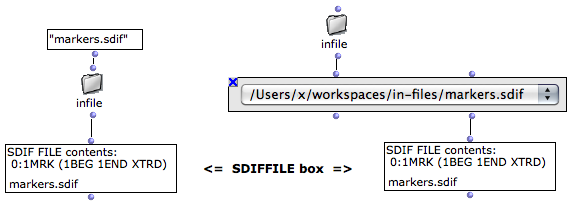

OpenMusic DocumentationHiérarchie de section : OM 6.6 User Manual > SDIF > SDIFFile
OpenMusic DocumentationHiérarchie de section : OM 6.6 User Manual > SDIF > SDIFFile
Navigation : page précédente | page suivante
Attention, votre navigateur ne supporte pas le javascript ou celui-ci à été désactivé. Certaines fonctionnalités de ce guide sont restreintes.
SDIF Files in OM : The SDIFFile Object
SDIF files are handled in OM via the SDIFFILE object. SDIFFILE boxes (when correctly initialized) are attached to a file on the computer hard disk. Therefore the actual data is not intern in the OM patch but always remains in the external file.
SDIFFILE has one single input/output used to initialize the box or access the contents of the attached SDIF file. |

|
SDIFFile Initialization
Default Initialization
If nothing is connected to the SDIFFILE box input, when it is evaluated, a file chooser dialog opens and allows to choose a file to load.
When initialized, the box miniview (press |

|
About the Structure of an SDIF File (Streams, Frames, Matrices...)
File Name
When the name of the box is visible (press n) the name of the file is displayed and updated at initializing the box.
After the SDIF file is loaded, you may want to lock the box (press |

|
Pathname Initialization
The SDIFFILE box is more generally initialized with a file pathname, which can be connected to its input.
This pathname can be typed textually or come from another box or function.

About Pathnames in OM
Sound Analysis Results
Most of the sound analysis tools available in OM (generally part of external libraries such as OM-SuperVP or OM-pm2) write analysis results in SDIF files and just return the written file pathname. These return values are therefore suitable for connection to the SDFFILE box. |

Fundamental frequency analysis with pm2-f0 from the OM-pm2 library. The result of analysis is a created SDIF file pathname, connected to the SDIFFILE box.
|
File Contents
Like MIDI or AIFF, SDIF is a binary data format: the contents of an SDIF file can not be read or edited as a simple text but requires specific tools and conversions. A number of different tools are available in OM for this purpose, which will be presented in these SDIF manual pages.
It is however possible to convert an SDIF file to text in order to check the full exact contents of a file.
|
{kind=link}
|
{kind=link}

|
Here is an example of the text conversion of an SDIF file. We can already observe a number of information:
|
The SDIF Format
Reading SDIF File Data in OM
SDIFFile Editor
Once initialize and attached to a file , double click on the SDIFFILE box to open the SDIFFile editor.

The SDIFFile editor is divided in two main areas :
- On the left-part, the different streams in the SDIF file are listed in separate blocks. Each block in turns contains a number of sub-blocks corresponding to the different SDIF matrix types found in this stream. Total number of frames, as well as beginning and end time are given for the different streams. For each matrix type, the different fields are given,as well as the maximum number of elements found in such matrix and its number of occurences in the stream.
Selecting a matrix block allows to visualize details of its contents on the right-part of the editor.
- On the right part, some data from the selected "matrix stream" is displayed. A specific field must be selected in the top-right menu. For this field, the evolution (in time) of a number of components is plotted as a set of curves. (When there is no evolution -- that is, only one matrix of this type has been found in the frame stream -- the single numerical values are displayed insteand of a curve).
More Information about the Structure of an SDIF File
The SDIFFile editor allows to inspect and visualize the contents of the SDIF file, but does not allow any modification or data edition.
An alternative editor for SDIF files : SDIF-Edit
SDIF-Edit is a program allowing to visualize and edit SDIF files in 3D.
It was used as the default editor for SDIFFile boxes in former versions of OM (< 6.4)
In OM 6.4 you can use SDIF-Edit instead of the default SDIF Editor installing a dedicated external library.
All information and downloads for SDIF-Edit available here : http://repmus.ircam.fr/sdifedit
Références :
Plan :
Navigation : page précédente | page suivante
A propos...(c) Ircam - Centre Pompidou